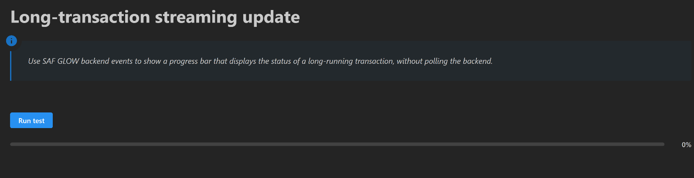
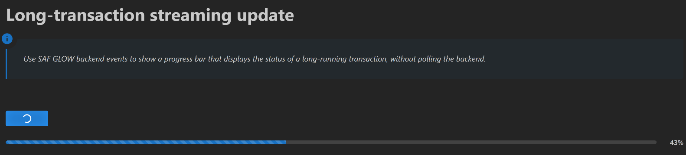
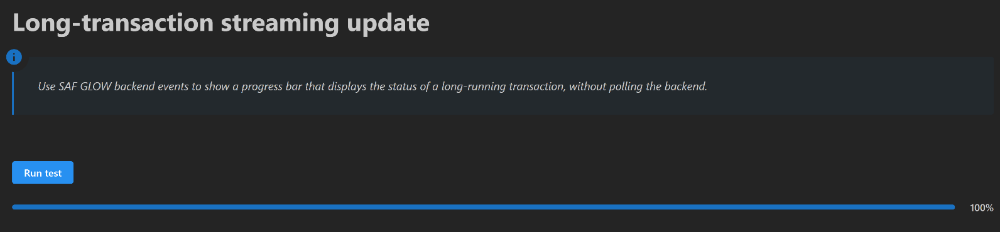

Long-running transaction streaming events#
Feature highlight#
A long-running transaction method is a transaction method decorated with @long_running. It
runs asynchronously, so the frontend stays responsive and other methods can execute while it is
still in progress. Instead of making the frontend poll the backend, such a method can raise
events as it goes. The frontend subscribes to those events with a WebSocket listener and reacts
as soon as they are pushed, which is what makes live progress reporting possible.
In this example, you learn how to:
Turn a slow computation into a long-running transaction method with the
@long_runningdecorator.Track the progress in typed step fields, such as a counter and a status string.
Push progress updates to the frontend from inside the method with
self.transaction.raise_event.Notify the frontend that the method has terminated with
enable_termination_event=True.Subscribe to both event streams from the frontend with
DashClient.create_event_listener.Wire callbacks that start the method and refresh the progress bar, the status label, and the button state on every event.
When you complete this example, you can expect the following output in the solution UI:
{kind=link}

Progress bar before the transaction execution starts#
{kind=link}

Progress bar while transaction execution is in progress#
{kind=link}

Progress bar when transaction execution is complete#
Prerequisites#
The long-running transaction API and the event API are provided in the GLOW Engine package, which is available by default in any SAF-based solution. The progress bar used in this example comes from the Dash Mantine Components library.
Coding#
To stream the progress of a long-running transaction method to the solution UI, work through the following sequence of sections.
Backend#
Create the solution definition.
Key concept — Long-running transaction method
A transaction method decorated with @long_running executes asynchronously. The frontend keeps
responding to user actions, and the current status of the method can be queried at any time with
step.get_long_running_method_state(<method_name>).
Key concept — Transaction event
Inside a transaction method, self.transaction.raise_event(message, stream_name=...) pushes an
arbitrary JSON-serializable payload to the named event stream. Any frontend listening to that
stream receives the payload immediately, so no polling is required.
Key concept — Termination event
Decorating a transaction method with @transaction(..., enable_termination_event=True) makes
GLOW raise one final event when the method terminates, whether it succeeded or failed. The payload
is a MethodState object, and the stream is named after the method, with underscores replaced by
hyphens. For stream_updates, the termination stream is therefore stream-updates.
Define the step model
The step model for a simple step named FirstStep is defined in the first_step.py file.
The step manages the state of the long transaction, using the
current_incrementattribute to count from 0 to 50.The
number_of_incrementsattribute controls the actual number of increments to run, and thestatusstring reflects when the latest increment was updated.The only defined transaction uses a for-loop to increment the counter and the status string every second, and raises a progress event on every iteration.
The transaction enables the termination event, so the frontend is notified when the loop ends.
first_step.py# 6 from ansys.saf.glow.solution import StepModel, StepSpec, transaction, long_running
7 import time
8 import datetime
9
10 PROGRESS_STREAM_NAME = "long-transaction-progress"
11 TERMINATION_STREAM_NAME = "stream-updates"
12
13
14 class FirstStep(StepModel):
15 """Definition of a simple step."""
16
17 status: str = "[]"
18 number_of_increments: int = 50
19 current_increment: int = -1
20
21 @long_running
22 @transaction(
23 self=StepSpec(
24 download=["number_of_increments"],
25 upload=["status", "current_increment"],
26 ),
27 enable_termination_event=True,
28 )
29 def stream_updates(self) -> None:
30 for i in range(self.number_of_increments):
31 self.status = f"Update {i} at {_now()}"
32 self.current_increment = i
33 self.transaction.raise_event(
34 message={
35 "status": self.status,
36 "current_increment": self.current_increment,
37 "number_of_increments": self.number_of_increments,
38 },
39 stream_name=PROGRESS_STREAM_NAME,
40 )
41 time.sleep(1)
42 self.status = f"Last updated at {_now()}"
43
44
45 def _now():
46 return datetime.datetime.now().strftime("%H:%M:%S")
Frontend#
Expose the solution definition in the UI.
Define the step layout
The user interface has two widgets: a button that starts the transaction and a progress bar, with
the completion percentage displayed next to it. The user is also kept informed with a dmc
notification, which is updated on every event pushed by the backend.
first_page.py# 6import json
7
8from ansys.saf.glow.client import DashClient, callback
9from ansys.saf.glow.solution import MethodState, MethodStatus
10from dash_extensions.enrich import Input, Output, State, ctx, html, no_update
11import dash_mantine_components as dmc
12
13from ansys.solutions.abc.solution.definition import AbcSolution
14from ansys.solutions.abc.solution.first_step import PROGRESS_STREAM_NAME, TERMINATION_STREAM_NAME
15
16NOTIFICATION_ID = "long-transaction-notification"
17
18
19def layout(project: AbcSolution):
20 step = project.steps.first_step
21 is_running = step.get_long_running_method_state("stream_updates").status == MethodStatus.Running
22 progress = _to_percentage(step.current_increment + 1 if is_running else 0, step.number_of_increments)
23
24 return html.Div(
25 [
26 html.H1("Long Transaction Streaming Update Example"),
27 html.P(),
28 dmc.Button("Run test", id="run-button", n_clicks=0, disabled=is_running, loading=is_running),
29 dmc.Group(
30 [
31 dmc.Progress(
32 id="completion-progress",
33 value=progress,
34 animated=is_running,
35 style={"flex": 1},
36 ),
37 dmc.Text(f"{progress}%", id="completion-progress-label", w=50, ta="right", fw=500),
38 ],
39 gap="sm",
40 wrap="nowrap",
41 align="center",
42 ),
43 ]
44 )
45
46
47def _to_percentage(completed_increments: int, number_of_increments: int) -> int:
48 if number_of_increments <= 0:
49 return 0
50 return int((completed_increments * 100) / number_of_increments)
Mount the event listeners
Event listeners are invisible WebSocket components that trigger callbacks when the backend pushes an event.
The lifetime of a listener must match the lifetime of the components its callbacks write to. A Dash callback is dispatched with all of its inputs and outputs, so if an event arrives while one of them is not in the layout, the renderer raises a “nonexistent object was used in an Input/Output” error.
This example therefore uses two sets of listeners: an application scoped set, mounted into
html.Div(id="long-transaction-event-listeners-container")declared in the global layout, which only drives the notification; and a page scoped set, declared in the page layout, which drives the button and the progress bar.Nothing is lost when the user leaves the page: the notification keeps following the transaction, and
layoutrebuilds the button and the progress bar from the step fields when the user comes back.
first_page.py#45# Inside layout(), next to the widgets they drive.
46html.Div(
47 [
48 DashClient.create_event_listener(
49 step, id="long-transaction-page-progress-listener", stream_name=PROGRESS_STREAM_NAME
50 ),
51 DashClient.create_event_listener(
52 step, id="long-transaction-page-termination-listener", stream_name=TERMINATION_STREAM_NAME
53 ),
54 ]
55)
first_page.py#60@callback(
61 Output("long-transaction-event-listeners-container", "children"),
62 Input("url", "pathname"),
63)
64def mount_event_listeners(project: AbcSolution):
65 step = project.steps.first_step
66 return [
67 DashClient.create_event_listener(
68 step, id="long-transaction-progress-listener", stream_name=PROGRESS_STREAM_NAME
69 ),
70 DashClient.create_event_listener(
71 step, id="long-transaction-termination-listener", stream_name=TERMINATION_STREAM_NAME
72 ),
73 ]
Key concept — Event listener
DashClient.create_event_listener(step, id=..., stream_name=...) returns a WebSocket component
connected to the given event stream of the step. Its message property is a dictionary whose
data key holds the JSON-encoded payload raised by the backend, so it can be used as the
Input of any callback. Several listeners may subscribe to the same stream: each one gets its
own event queue on the server.
Key concept — Callback
A callback is a Dash-decorated function that fires in response to a UI event. In a SAF
solution, callbacks reach the backend through project.steps.<step_name>, read or write
fields, and invoke transaction methods. No manual HTTP calls are needed.
Define the transaction start button
The callback starting the long transaction resets the data in the step.
It also shows a persistent loading notification so the user knows the transaction is running.
To extend this example, you could add an input indicating the number of increments to be run.
This data can be set as it is downloaded in the corresponding transaction.
first_page.py#61@callback(
62 Output("notification-container", "sendNotifications", allow_duplicate=True),
63 Input("run-button", "n_clicks"),
64 State("url", "pathname"),
65 prevent_initial_call=True,
66)
67def start_long_running_transaction(n_clicks, project: AbcSolution):
68 notification = no_update
69
70 if ctx.triggered_id == "run-button" and n_clicks:
71 step = project.steps.first_step
72 step.current_increment = -1
73 step.stream_updates()
74
75 notification = [
76 dict(
77 title="Info",
78 id=NOTIFICATION_ID,
79 action="show",
80 message="Streaming updates from the long running transaction...",
81 autoClose=False,
82 loading=True,
83 color="blue",
84 withCloseButton=False,
85 )
86 ]
87
88 return notification
Key concept — Notification
dmc.NotificationContainer is declared once in the global application layout with the
notification-container identifier. Callbacks write to its sendNotifications property to
show (action="show") or refresh (action="update") a notification identified by its
id, which makes it easy to keep a single notification alive for the whole duration of a
long-running transaction.
Synchronize the notification with the transaction lifecycle
This callback is driven by the application scoped listeners, so it only writes to
notification-container, which belongs to the global layout and is therefore always present.Progress events refresh the in-progress notification with the latest status; the termination event replaces it with a success or failure message built from the
MethodStatepayload.As a result the user keeps following the transaction from any page of the solution.
first_page.py#118@callback(
119 Output("notification-container", "sendNotifications", allow_duplicate=True),
120 Input("long-transaction-progress-listener", "message"),
121 Input("long-transaction-termination-listener", "message"),
122 prevent_initial_call=True,
123)
124def sync_notifications(progress_message, termination_message):
125 notification = no_update
126
127 if ctx.triggered_id == "long-transaction-progress-listener" and progress_message:
128 update = json.loads(progress_message["data"])
129 progress = _to_percentage(update["current_increment"] + 1, update["number_of_increments"])
130 notification = [
131 dict(
132 title="Info",
133 id=NOTIFICATION_ID,
134 action="update",
135 message=f"{update['status']} ({progress}%)",
136 autoClose=False,
137 loading=True,
138 color="blue",
139 withCloseButton=False,
140 )
141 ]
142 elif ctx.triggered_id == "long-transaction-termination-listener" and termination_message:
143 method_state = MethodState.model_validate_json(termination_message["data"])
144 succeeded = method_state.status == MethodStatus.Completed
145 notification = [
146 dict(
147 title="Success" if succeeded else "Error",
148 id=NOTIFICATION_ID,
149 action="update",
150 message=(
151 "Successfully ran stream_updates."
152 if succeeded
153 else "Failed to run stream_updates. Please check the logs."
154 ),
155 color="green" if succeeded else "red",
156 autoClose=5000 if succeeded else False,
157 withCloseButton=True,
158 loading=False,
159 )
160 ]
161
162 return notification
Synchronize the controls with the transaction lifecycle
This callback is driven by the page scoped listeners, so every one of its inputs and outputs belongs to the page layout and it can never be triggered while its components are unmounted.
It reacts to three inputs, dispatched on
ctx.triggered_id: the click on the button, which disables it and starts the animated progress bar; a progress event, which advances the progress bar and refreshes the percentage label; and the termination event, which re-enables the button and completes the bar.The progress stream and the termination stream are independent, so their events are not ordered relative to each other. The
disabledstate of the button is read back as aStateand used to discard progress events that arrive after the transaction has ended.Progress events carry everything the frontend needs, so no round trip to the backend is required. Every output that must not change is left to
no_update.
first_page.py#176@callback(
177 Output("run-button", "disabled", allow_duplicate=True),
178 Output("run-button", "loading", allow_duplicate=True),
179 Output("completion-progress", "animated", allow_duplicate=True),
180 Output("completion-progress", "value", allow_duplicate=True),
181 Output("completion-progress-label", "children", allow_duplicate=True),
182 Input("run-button", "n_clicks"),
183 Input("long-transaction-page-progress-listener", "message"),
184 Input("long-transaction-page-termination-listener", "message"),
185 State("run-button", "disabled"),
186 prevent_initial_call=True,
187)
188def sync_controls(n_clicks, progress_message, termination_message, is_running):
189 disable_run_button, loading_run_button = no_update, no_update
190 animated, progress, progress_label = no_update, no_update, no_update
191
192 if ctx.triggered_id == "run-button" and n_clicks:
193 disable_run_button, loading_run_button = True, True
194 animated, progress, progress_label = True, 0, "0%"
195 elif ctx.triggered_id == "long-transaction-page-progress-listener" and progress_message and is_running:
196 update = json.loads(progress_message["data"])
197 progress = _to_percentage(update["current_increment"] + 1, update["number_of_increments"])
198 progress_label = f"{progress}%"
199 elif ctx.triggered_id == "long-transaction-page-termination-listener" and termination_message:
200 method_state = MethodState.model_validate_json(termination_message["data"])
201 disable_run_button, loading_run_button = False, False
202 animated = False
203 if method_state.status == MethodStatus.Completed:
204 progress, progress_label = 100, "100%"
205
206 return disable_run_button, loading_run_button, animated, progress, progress_label
Now that your implementation is complete, continue to the Testing section.
Testing#
Finally, test your implementation to confirm it works as expected.
Run the solution and compare your results with the results shown in the Feature highlight section.